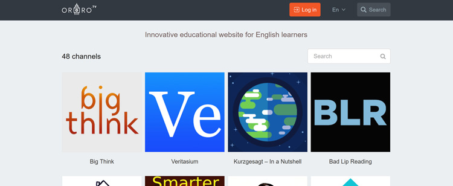
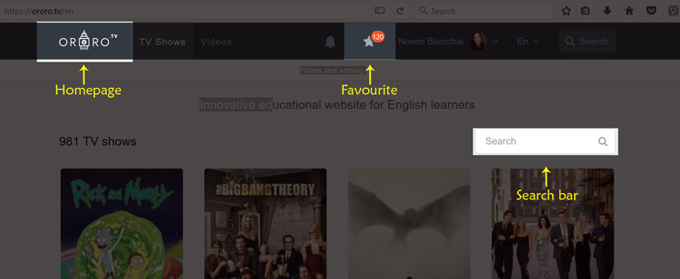
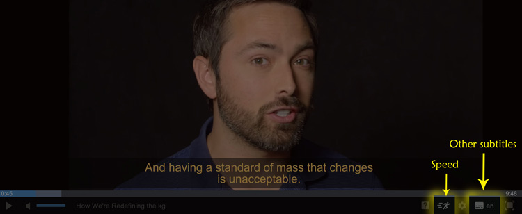
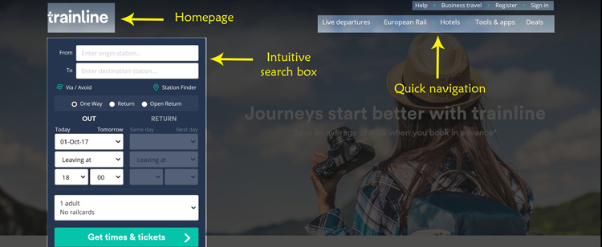
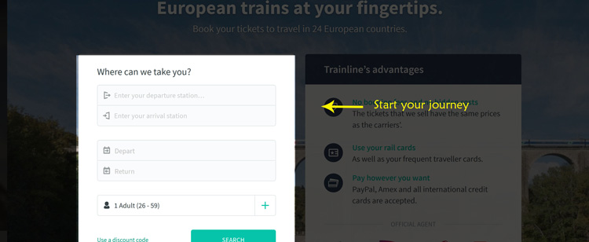
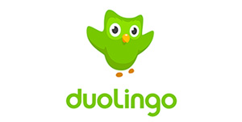
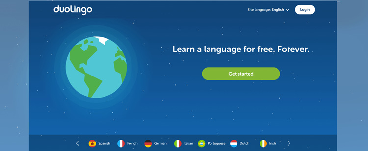
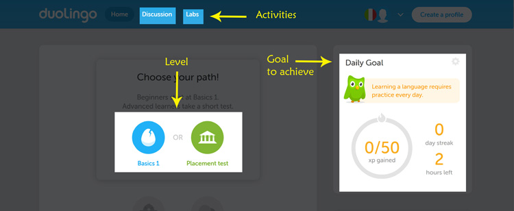

Appealing Web sites
This post should be very useful in terms of websites.
I would suggest you some good pages that for me are truly interesting to use.
They are so different each other and made to different purposes but each of them is so easy to use.
Ororo.tv.com
Ororo.tv is my favourite website. It´s so useful for who is learning or improving English. Basically is a public offer on selling electronic subscriptions for viewing TV series with subtitles and an embedded translator.
Easy Access
Start to use it is very easy, you need just to go on “Log in” and access to your own email or social account. The site doesn´t ask you to create any password or a new account with long data to write. Also, it doesn´t force you to do the subscription and doesn’t need any sensible data as your credit card number (in case of they will need). So this is fantastic because isn´t annoying, is fast to access and easy to enjoy.
Easy to use
After the first step, you can use the website for one hour for free or if you want to use it more you should have a subscription. Use the search bar to search your favourite season or basically you can see all the seasons on the homepage. When you find something that you want to watch you can add it on your favourite seasons. If you do that anytime you’ll want to watch the same film you can get it with just a click on the “start ”.
Useful to learn
During the watching of your seasons, you can help yourself with different languages on the subtitles. The English one subtitle is always fixed, but if you want you can add other languages. Also, you can speed up or slow down the audio it´ll allow you to understand easily the speaking part.
Visit the Website:ororo.tv
Thetrainline.com
During my last year, since when I´ve moved in Uk I started to use this website. It´s so interesting because I can find there all I wish to have a good trip and is always so exact. But what made thetrainline.com so nice?
Intuitive
This website has a big quantity of data but it´s managed very well. First of all when you get in is very intuitive and direct. Of course, if you need this website your intention is to get some ticket or real-time updates. Get in it and your attention is focused on the intuitive box on the left. Answer to the boxes and write down all the information that you need to do your trip, finally press “Get times & tickets”. After that will very easily find the correct time that you´ll need. It gets real-time information for departure and arrival times for any train station in Great Britain.
Many purposes
This website is not just to go around UK but It´s also full of discount and good trip ideas. Find all of the prices and timetables for trains, using this simple booking platform. Trainline automatically compares the prices of different tickets and rail operators, so you don´t have to. They also can find a hotel for you or if you want all the journey. It depends on you. Payments are very sure, also you can either print your ticket at a station or receive an E-Ticket to print at home. So let´s start your easy search.
Visit the Website: thetrainline
Duolingo.com
Duolingo is a good website to learn languages. If you are looking for something that allows you to learn as a game, this is the best website I know. It gives everyone access to a private tutor experience through technology and all of that it´s free.
Well structured
This website is a masterpiece of style. It´s hard to stay motivated when you are learning online but how they made it´s amazing. I really like the graphics they are used, it´s so simple, colourful and nice to discover. It doesn´t represent a long and boring page but it´s medium size and very dynamic. It´s composed of graphics draws that seems very friendly with the target. I like this type of style it makes me comfortable. Also, the structure allows understanding what you are going to do, what are the key points and where is the information that I need.
Easy using
To get started you´ll need just to click "get started" after you´ll choose the language that you want to learn and finally the daily goal that you want to achieve. Now you can start your "game" with lots of images, words and categories. Every day you will game with it to learn more and more and, at the end of the period that you already signed before, you´ll learn a new language. However, if it´s not enough you can discover other options. For example, Duolingo Stories uses dialogue to help intermediate and advanced learners improve their reading, listening, and comprehension skills. If you want you can connect with other Duolingo learners around you in real life! Practice your communication skills and meet members of the Duolingo community.
Visit the Website: duolingo